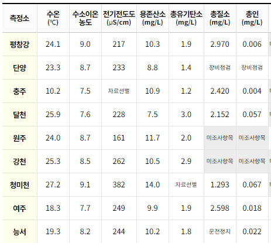

항생 내성
지도
시스템
경희대학교
지리학과
유역 현황 정보
항생 내성 정보
공간 분석 정보
시스템 소개
자료 획득 시기의 수질자료
수질자료
시기 검색
1
1
1
1
수질자료 표로 불러오기. Table 형태. 형태는 그림과 같음.

간편 항생내성정보 검색
← 뒤로가기
Antibiotic 1
Antibiotic 2
Antibiotic 3
Antibiotic 4
Antibiotic 5
Antibiotic 6
Antibiotic 7
Antibiotic 8
Antibiotic 9
Antibiotic 10
Antibiotic 11
Antibiotic 12
Antibiotic 13
Antibiotic 14
Antibiotic 15
Antibiotic 16
위치(주소), 포인트의 좌표, 가장 가까운 측정소로부터의 거리 (표 형태로 제공)